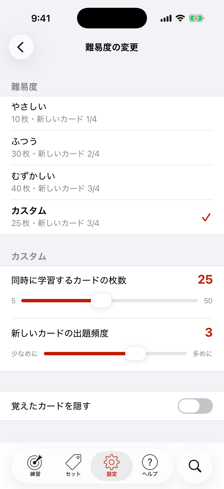

学習アルゴリズム
Japanese in a Flash!は、とても賢い統計を使って、次にどのカードを学習すべきかを決めます。よく知っているカードはあまり出ず、苦手なカードはよく出ます。これはライトナー・システムなどの間隔反復学習（SRS）に近い方法です。

大きなセットを学習するときは、学習するカードの「プール」が選ばれます。プールのカードを覚えるにつれて、新しいカードが追加されます。
Japanese in a Flash!ならではの機能として、設定で練習の難易度を変えられます。「学習プール」のカードの枚数や、新しいカードが出る頻度を変えると、学習がやさしくもむずかしくもなります。覚えたカードを隠すスイッチで、覚えた単語を学習から外すこともできます。
むずかしそうに聞こえても大丈夫！ やさしい・ふつう・むずかしいのプリセットがあるので、計算のことは気にしなくてかまいません（気にするのは日本語だけで！）。
やさしいは学習プールが小さく、新しいカードが出る回数も少なめです。むずかしいはプールが大きく、新しいカードも多めに出ます。カスタムを選ぶと、2つのスライダーを自分で設定できます。